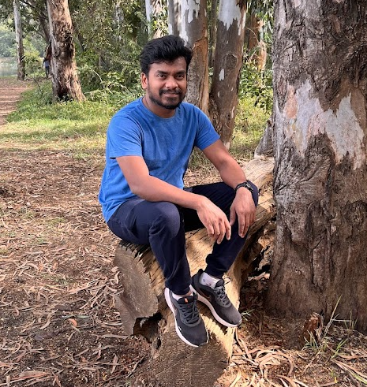

Muthukrishnan Engineering Manager Sanas.ai
I am Muthukrishnan, currently working as an Engineering Manager at Sanas AI Inc. I have over 16 years of experience building scalable SaaS applications from the ground up. Throughout my career, I’ve had the privilege of working in environments ranging from small startups to established enterprises, contributing to their growth and success. As a hands-on leader, I’ve built and scaled applications that have grown from hundreds of users to millions, and I have filed five patents. These patents cover a range of technologies, from optical character recognition (OCR) to systems for cross-application walkthroughs and UI element retrieval.
Experience
Sanas AI Inc.
Engineering Manager
Sept 2024 - present
Whatfix Inc.
Engineering Manager
Dec 2022 - Aug 2024
Whatfix Inc.
Principal Engineer
Jan 2017 - Dec 2022
Huawei, Webzeest, QSI Next Gen Healthcare
Software Engineer
2010 - 2017
Education
Visvesvaraya Technological University
Bangalore, India
Bachelor of Engineering in Computer Science
2006 - 2010
Books


Patents
1. PROCESSING TECHNIQUES FOR FAST AND ACCURATE IDENTIFICATION OF APPLICATION SCREENS USING OPTICAL CHARACTER RECOGNITION
18/060,274 · Filed Nov 30, 2022
2. CROSS-APPLICATION WALKTHROUGH GUIDES FROM DESKTOP APP TO DESKTOP APP, DESKTOP APP TO BROWSER AND BROWSER TO DESKTOP APP
18/307,280 · Filed Apr 26, 2023
3. SYSTEM AND METHOD FOR DETECTING A CHANGE IN CONTEXT OF AN APPLICATION USING SUBSECTIONS
18/478,360 · Filed Sep 29, 2023
4. SYSTEM AND METHOD FOR DETECTING A CHANGE IN A CONTEXT OF AN APPLICATION
18/478,379 · Filed Sep 29, 2023
5. SYSTEM AND METHOD OF CREATING A SHADOW REPRESENTATION OF THE USER INTERFACE FOR FASTER UI ELEMENT RETRIEVAL
18/398,544 · Filed Dec 28, 2023